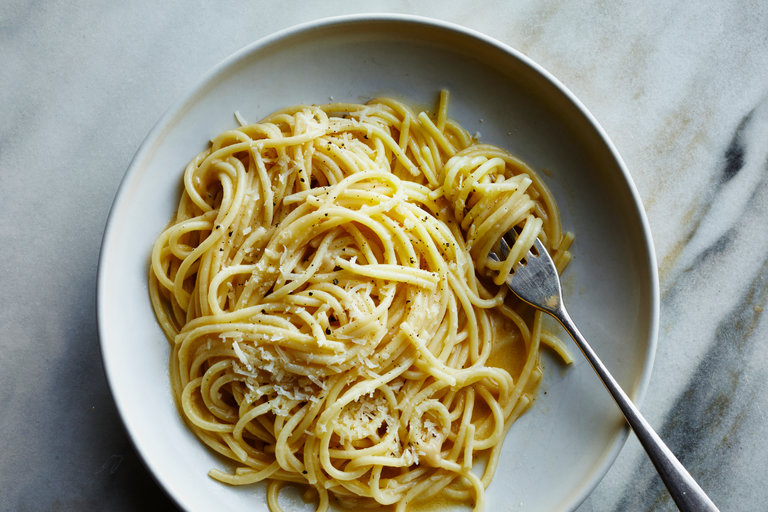

Spaghetti

This recipe is quick and easy to make and it a personal favorite of myself. It is a cheap and quick meal that will feed multiple people
- Spaghetti
- Butter
- Water
- Garlic salt
- Boil water in a sauce pot in medium-high heat
- Once water is boiling place spaghetti in water as is
- Periodically stir water for 6-8 minutes
- Remove pot from heat when spaghetti is firm
- Strain pasta from your water
- Stir butter into your pasta
- Add garlic salt